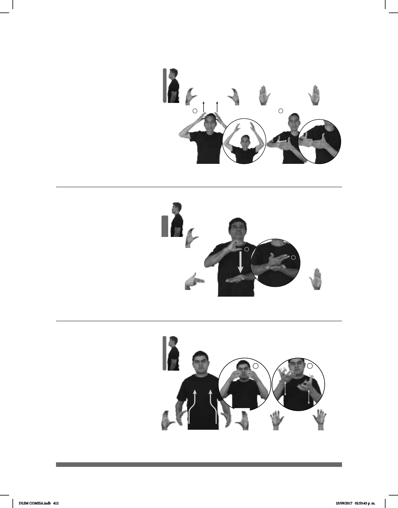

412
Seña: SC: I. SS; II. SB
I. C.1; II. MD y MB
B-P.2
I. Palmas hacia el centro; II.
MD palma hacia adentro. MB palma hacia
la derecha.
I. De las orejas a la parte
superior de la cabeza; II. A la altura del
pecho. MD detrás de MB.
I. Recto; II. MD se mueve
la muñeca.
sust. f. y m. Jefe de cocina
en especial de un restaurante.
Seña: SB
MD seña que pasa de
MD la palma inicia
hacia afuera y termina hacia adentro.
MB palma hacia arriba.
MD a la altura del pecho.
MB a la altura del abdomen.
La MD golpea la MB en
línea recta.
Capital del estado de
Quintana Roo, perteneciente a los
Estados Unidos Mexicanos.
Chef (C-49)
(C-50)
__________________o.i.g.__
pro-TÚ CHEF YA ESTUDIAR
¿Estudiaste para chef?
DOMINGO CHETUMAL dm-JUAN VACACIONES IR
El domingo, Juan se irá de vacaciones a Chetumal.
1
2
Seña: SC: I. y II. SB
I. C.3; II. MD y MB 5.5
I. Palmas hacia el centro; II.
MD y MB palmas hacia arriba.
I. De la cadera al centro al
cuello, de los lados al centro; II. MD y MB
a la altura del cuello.
I. Recto; II. MD y MB se
mueven formando círculos hacia
arriba mientras los dedos se mueven
alternadamente.
sust. f. Construcción
doméstica terminada en un conducto
vertical que lleva al exterior el humo
producido por la leña que se puso en su base
para cuecer la comida o calentar la casa.
(C-51)
CHIMENEA pro-TÚ ENCENDER
fuego
Enciende la chimenea.
DLSM COMISA.indb 412 25/09/2017 02:53:43 p. m.